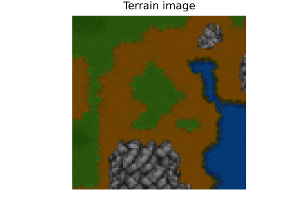
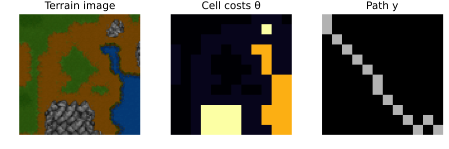
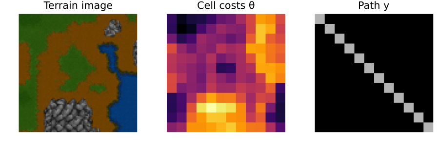

Warcraft
Find the cheapest path on a 12×12 terrain map: cell travel costs are unknown and must be inferred from the RGB terrain image using a neural network.
using DecisionFocusedLearningBenchmarks
using Plots
b = WarcraftBenchmark()WarcraftBenchmark()Observable input
At inference time the decision-maker observes only the terrain image x (not the costs θ):
sample = generate_dataset(b, 1)[1]
plot_context(b, sample)
A training sample
Each sample is a labeled triple (x, θ, y):
x: terrain image (12×12×3 RGB array; observable at train and test time)θ: true cell travel costs (training supervision only, hidden at test time)y: optimal path indicator (y[i,j] = 1if cell(i,j)is on the path)
Left: terrain image. Middle: true costs θ. Right: optimal path y:
plot_sample(b, sample)
Untrained policy
A DFL policy chains two components: a CNN predicting cell travel costs from the terrain image:
model = generate_statistical_model(b) # ResNet18 CNN: terrain image → 12×12 cost mapChain(
Conv((7, 7), 3 => 64, pad=3, stride=2, bias=false), # 9_408 parameters
BatchNorm(64, relu), # 128 parameters, plus 128
MaxPool((3, 3), pad=1, stride=2),
Parallel(
PartialFunction(
"",
Metalhead.addact,
(NNlib.relu,),
NamedTuple(),
),
identity,
Chain(
Conv((3, 3), 64 => 64, pad=1, bias=false), # 36_864 parameters
BatchNorm(64), # 128 parameters, plus 128
NNlib.relu,
Conv((3, 3), 64 => 64, pad=1, bias=false), # 36_864 parameters
BatchNorm(64), # 128 parameters, plus 128
),
),
AdaptiveMaxPool((12, 12)),
DecisionFocusedLearningBenchmarks.Utils.average_tensor,
DecisionFocusedLearningBenchmarks.Utils.neg_tensor,
DecisionFocusedLearningBenchmarks.Utils.squeeze_last_dims,
) # Total: 9 trainable arrays, 83_520 parameters,
# plus 6 non-trainable, 384 parameters, summarysize 328.945 KiB.and a maximizer finding the shortest path given those costs:
maximizer = generate_maximizer(b) # Dijkstra shortest path on the 12×12 griddijkstra_maximizer (generic function with 1 method)An untrained CNN produces a near-uniform cost map, yielding a near-straight path:
θ_pred = model(sample.x)
y_pred = maximizer(θ_pred)
plot_sample(b, DataSample(sample; θ=θ_pred, y=y_pred))
Optimality gap on this sample (lower is better):
compute_gap(b, [sample], model, maximizer)Float16(0.1515)Problem Description
In the Warcraft benchmark, each instance is a 12×12 grid representing a Warcraft terrain map. Each cell has an unknown travel cost depending on its terrain type (forest, mountain, water, etc.). The task is to find the path from the top-left to the bottom-right corner that minimizes total travel cost.
Formally, let $\theta_{ij}$ be the (unknown) cost of cell $(i,j)$ and $y_{ij} \in \{0,1\}$ indicate whether cell $(i,j)$ is on the path. The objective is:
\[y^* = \mathop{\mathrm{argmin}}\limits_{y \in \mathcal{P}} \sum_{(i,j)} \theta_{ij} \, y_{ij}\]
where $\mathcal{P}$ is the set of valid grid paths (4-connected, source to sink).
The dataset contains 10 000 labeled terrain images from the Warcraft II tileset. It is downloaded automatically on first use via DataDeps.jl.
Key Components
WarcraftBenchmark has no parameters.
| Method | Description |
|---|---|
generate_dataset(b, n) | Downloads and loads n terrain images with true costs and paths |
generate_statistical_model(b) | ResNet18 CNN (first 5 layers + adaptive maxpool + neg) |
generate_maximizer(b; dijkstra=true) | Dijkstra or Bellman-Ford shortest path |
DFL Policy
\[\xrightarrow[\text{Terrain image}]{x \in \mathbb{R}^{12 \times 12 \times 3}} \fbox{ResNet18 CNN} \xrightarrow[\text{Cell costs}]{\theta \in \mathbb{R}^{12 \times 12}} \fbox{Dijkstra} \xrightarrow[\text{Path}]{y \in \{0,1\}^{12 \times 12}}\]
The CNN maps terrain pixel values to predicted cell costs, which are then passed to a shortest-path solver. Training end-to-end with InferOpt.jl teaches the network to produce costs that lead to good paths, not just accurate cost estimates.
See the Warcraft tutorial for a complete end-to-end training example using PerturbedMultiplicative and FenchelYoungLoss.
This page was generated using Literate.jl.